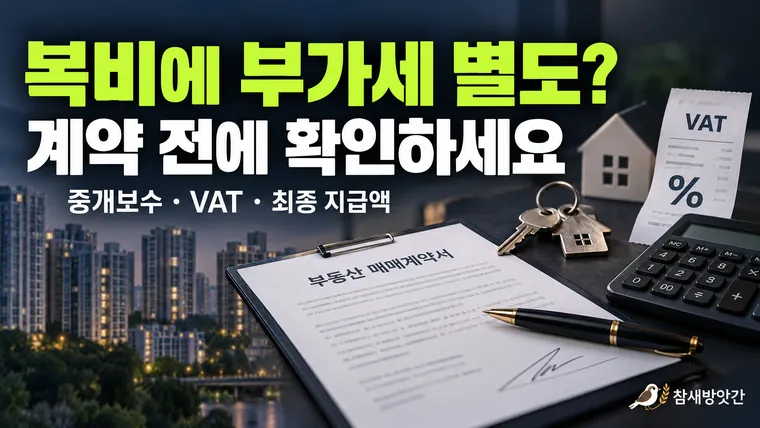

부동산 계약 전 중개보수와 부가가치세 확인하는 방법
중개보수 150만 원에 부가세 10%가 별도라면 최종 지급액은 165만 원입니다. 계약 전에 부가세 포함 여부와 지급 시점을 확인하는 순서를 정리합니다.

부동산 계약을 준비하다 보면 매매가격이나 보증금, 잔금 날짜에는 신경을 쓰면서도 중개보수에 대해서는 계약이 끝날 무렵 확인하는 경우가 있습니다.
특히 공인중개사로부터 안내받은 중개보수에 부가가치세가 포함되어 있는지, 별도로 추가되는지에 따라 실제 지급해야 할 금액이 달라질 수 있습니다.
예를 들어 중개보수가 100만 원이라고 안내받았더라도 해당 금액이 부가가치세를 포함한 최종 금액인지에 따라 준비해야 할 비용에는 차이가 생깁니다.
따라서 부동산 계약을 진행하기 전에는 중개보수의 적용 기준뿐 아니라 부가가치세, 지급 시점, 영수증 발급 여부까지 함께 확인하는 것이 좋습니다.
이번 글에서는 실제 부동산 계약 과정에서 중개보수를 확인하는 순서와 부가가치세 적용 방식, 지급 전 알아두면 좋은 사항들을 정리해 보겠습니다.
1. 부동산 중개보수는 언제 협의하는 것이 좋을까?
부동산 중개보수는 공인중개사가 중개 업무를 수행하고 거래계약이 성립했을 때 발생하는 보수입니다.
주택 거래의 경우 관련 법령과 지방자치단체 조례에서 정한 상한요율이 적용되며, 실제 중개보수는 그 범위 안에서 중개의뢰인과 개업공인중개사가 협의하여 결정합니다.
여기서 중요한 것은 중개보수 협의를 계약이 모두 끝난 뒤로 미루지 않는 것입니다.
예를 들어 아파트 매매계약을 체결한 후 잔금일에 중개보수를 지급하려고 하는데, 매수인이 예상한 금액과 공인중개사가 안내한 금액이 다르다면 불필요한 혼란이 발생할 수 있습니다.
이러한 상황을 줄이려면 계약서에 서명하기 전에 적용 요율과 최종 지급 금액을 확인하는 것이 좋습니다.
중개보수 협의 시 확인할 사항
중개보수에 관해서는 다음 내용을 구분해서 확인하면 편리합니다.
- 거래금액에 적용되는 중개보수 상한요율
- 실제 협의한 중개보수율
- 부가가치세 포함 여부
- 중개보수 지급 시점
- 지급 후 증빙서류 발급 방법
특히 중개보수 상한액과 실제 협의 금액은 서로 다를 수 있습니다.
상한요율은 반드시 지급해야 하는 고정요율이 아니라 법적으로 허용되는 최대 기준이기 때문입니다.
따라서 계약 전 중개보수 계산기를 통해 예상 상한액을 확인하고, 실제 지급할 금액은 별도로 협의하는 것이 좋습니다.
2. 중개보수에 부가가치세가 추가되는 이유
부동산 중개보수를 확인할 때 자주 혼동하는 부분이 부가가치세입니다.
중개보수는 공인중개사가 제공하는 중개용역의 대가이며, 사업자의 과세 유형과 관련 규정에 따라 부가가치세가 적용될 수 있습니다.
여기서 알아두어야 할 점은 모든 공인중개사 사무소에 동일한 부가가치세 계산 방식을 적용해서는 안 된다는 사실입니다.
사업자의 과세 유형에 따라 세금 계산과 증빙 발급 방식에 차이가 있을 수 있기 때문입니다.
일반과세자인 경우
일반과세자는 원칙적으로 과세 대상 용역의 공급가액에 10%의 부가가치세율을 적용합니다.
예를 들어 협의한 중개보수가 부가가치세 별도 공급가액 기준으로 150만 원이라고 가정하겠습니다.
계산 과정은 다음과 같습니다.
| 구분 | 금액 |
|---|---|
| 중개보수 공급가액 | 1,500,000원 |
| 부가가치세 10% | 150,000원 |
| 최종 지급 금액 | 1,650,000원 |
이 사례에서는 최종적으로 165만 원을 지급하게 됩니다.
다만 처음부터 150만 원을 부가가치세 포함 금액으로 협의했다면 위와 같은 방식으로 15만 원을 추가하는 것은 적절하지 않습니다.
따라서 중개보수 금액을 안내받을 때는 반드시 부가가치세가 포함된 금액인지 확인해야 합니다.
간이과세자인 경우
간이과세자는 일반과세자와 부가가치세 산정 구조가 다릅니다.
간이과세자의 납부세액은 업종별 부가가치율 등을 반영하는 방식으로 계산되며, 사업자의 매출 규모와 적용 요건에 따라 납부 의무나 증빙 발급 방식에도 차이가 발생할 수 있습니다.
따라서 간이과세자라는 이유만으로 모든 거래에서 일정한 비율의 부가가치세를 별도로 지급해야 한다고 단정하기는 어렵습니다.
중개사무소의 과세 유형과 실제 안내받은 금액의 산정 근거를 확인하는 것이 중요합니다.
특히 중개보수에 부가가치세가 별도로 추가된다는 안내를 받았다면, 해당 금액이 어떤 기준으로 계산되었는지 확인하는 것이 좋습니다.
3. 중개보수 지급 시점과 영수증은 어떻게 확인할까?
중개보수는 금액뿐 아니라 언제 지급하는지도 미리 확인해 두는 것이 좋습니다.
일반적으로 중개보수의 지급 시기는 중개의뢰인과 개업공인중개사 사이의 약정에 따릅니다.
별도의 약정이 없는 경우에는 관련 규정에서 정한 기준에 따라 지급 시기를 판단하게 됩니다.
따라서 모든 부동산 거래에서 반드시 계약금 지급일이나 잔금일에 중개보수를 지급해야 하는 것은 아닙니다.
실제 거래에서는 잔금 지급일에 중개보수를 정산하는 경우도 있지만, 계약을 진행하기 전에 지급 시점을 명확하게 정해 두는 것이 좋습니다.
중개보수 지급 후 증빙서류 확인하기
중개보수를 지급했다면 거래 내용을 확인할 수 있는 증빙서류를 받아두는 것이 좋습니다.
사업자의 과세 유형과 발급 요건에 따라 세금계산서, 현금영수증 등 적절한 증빙을 확인할 수 있습니다.
특히 계좌이체로 중개보수를 지급하는 경우에는 이체 내역을 보관하고, 실제 지급한 금액과 증빙서류에 기재된 금액이 일치하는지 확인하는 것이 좋습니다.
중개보수 지급 내역을 정리할 때는 다음 항목을 기록해 두면 편리합니다.
| 확인 항목 | 기록할 내용 |
|---|---|
| 거래 부동산 | 아파트 또는 주택 소재지 |
| 중개사무소 | 상호 및 등록 정보 |
| 협의한 중개보수 | 실제 약정 금액 |
| 부가가치세 | 포함 여부 및 금액 |
| 지급 날짜 | 실제 지급일 |
| 지급 방법 | 계좌이체 등 |
| 증빙서류 | 영수증 또는 관련 증빙 |
이러한 기록은 거래 과정에서 발생한 비용을 정리하거나 추후 지급 내역을 확인할 때 도움이 됩니다.
중개대상물 확인·설명서도 살펴보자
부동산 계약 과정에서 공인중개사는 중개대상물 확인·설명서를 작성하고 관련 내용을 설명하게 됩니다.
이 서류에는 거래 대상 부동산에 관한 정보뿐 아니라 중개보수와 관련된 사항도 포함됩니다.
따라서 계약을 진행할 때 중개대상물 확인·설명서에 기재된 중개보수 관련 내용이 실제 협의한 조건과 일치하는지 확인하는 것이 좋습니다.
서류에 기재된 내용을 충분히 이해하지 못했다면 서명하기 전에 설명을 요청하는 것이 바람직합니다.
4. 중개보수 계산기로 계약 전 예상 비용 확인하기
중개보수는 거래금액과 부동산 유형, 거래 방식에 따라 계산 기준이 달라집니다.
따라서 계약을 진행하기 전에 중개수수료 계산기를 활용하면 예상 비용을 파악하는 데 도움이 됩니다.
예를 들어 5억 원의 아파트를 매매하는 상황을 가정해 보겠습니다.
일반적인 주택 매매 기준으로 해당 거래금액 구간의 중개보수 상한요율은 0.4%입니다.
계산식은 다음과 같습니다.
500,000,000원 × 0.004 = 2,000,000원
이 경우 중개보수 상한액은 200만 원입니다.
여기서 실제 협의한 중개보수가 부가가치세 별도 공급가액 기준으로 180만 원이고, 일반과세자의 부가가치세율 10%가 적용된다고 가정해 보겠습니다.
| 구분 | 금액 |
|---|---|
| 중개보수 상한액 | 2,000,000원 |
| 실제 협의한 공급가액 | 1,800,000원 |
| 부가가치세 10% | 180,000원 |
| 최종 지급 금액 | 1,980,000원 |
이처럼 중개보수 상한액과 실제 협의 금액, 부가가치세를 구분하면 최종 지급할 비용을 보다 명확하게 이해할 수 있습니다.
다만 위 계산은 일반적인 사례를 설명하기 위한 예시입니다. 실제 거래에서는 부동산 소재지의 조례와 중개사무소의 과세 유형, 협의 조건 등을 함께 확인해야 합니다.
계약 전에 활용하면 좋은 확인 순서
중개보수와 관련된 혼동을 줄이려면 다음 순서로 확인하는 것이 좋습니다.
첫째, 중개수수료 계산기를 이용해 해당 거래의 중개보수 상한액을 확인합니다.
둘째, 공인중개사와 실제 적용할 중개보수율 및 금액을 협의합니다.
셋째, 안내받은 금액에 부가가치세가 포함되어 있는지 확인합니다.
넷째, 중개보수 지급 시점과 증빙서류 발급 방법을 확인합니다.
이러한 과정을 거치면 계약을 마무리하는 단계에서 예상하지 못한 비용이 발생하는 상황을 줄이는 데 도움이 됩니다.
마무리: 중개보수는 최종 지급 금액까지 확인하는 것이 중요하다
부동산 중개보수를 확인할 때는 단순히 상한요율만 알아두는 것으로 충분하지 않습니다.
실제로 협의한 중개보수가 얼마인지, 부가가치세가 포함된 금액인지, 언제 지급해야 하는지까지 함께 확인해야 합니다.
특히 부가가치세는 중개사무소의 과세 유형과 협의 내용에 따라 확인할 사항이 달라질 수 있으므로 계약 전에 구체적인 금액을 안내받는 것이 좋습니다.
중개수수료 계산기는 법정 상한액을 미리 파악하는 도구로 활용하고, 실제 지급 조건은 계약 과정에서 명확하게 정리하는 것이 중요합니다.
다음 글에서는 주택 구입 과정에서 대출을 이용할 때 알아두면 좋은 원리금균등상환과 원금균등상환 방식의 차이를 살펴보겠습니다.
- 국가법령정보센터: 「공인중개사법」 제25조, 제32조
- 국가법령정보센터: 「공인중개사법 시행령」 및 「공인중개사법 시행규칙」
- 국가법령정보센터: 「부가가치세법」
- 국세청 홈택스: 사업자 과세 유형 및 증빙서류 관련 안내
- 국토교통부: 부동산 중개보수 관련 안내
※ 본문은 일반적인 부동산 거래 과정에서 중개보수와 부가가치세를 이해하기 위한 정보성 자료입니다. 실제 지급 금액과 세금 적용 여부는 거래 조건, 사업자의 과세 유형 및 적용 시점의 관련 규정에 따라 달라질 수 있습니다.
이 글의 내용은 2026년 10월 기준입니다. 부가가치세 적용은 중개사무소의 과세 유형에 따라 달라질 수 있으니 계약 전에 구체적인 금액과 증빙 방법을 안내받으세요. 계산 결과는 참고용입니다.
자주 묻는 질문
그렇지 않습니다. 일반과세자의 과세 대상 중개용역에는 원칙적으로 10%의 부가가치세율이 적용되지만, 간이과세자는 세액 산정 구조가 다릅니다. 또한 안내받은 중개보수가 이미 부가가치세를 포함한 금액인지에 따라서도 최종 지급액이 달라질 수 있습니다.
중개보수 지급 시기는 원칙적으로 중개의뢰인과 개업공인중개사 사이의 약정에 따릅니다. 별도의 약정이 없다면 관련 규정에 따른 지급 시기를 확인해야 합니다.
계좌이체로 지급하더라도 사업자의 과세 유형과 발급 요건에 따라 적절한 증빙서류를 확인할 수 있습니다. 지급 내역을 보관하고, 필요한 증빙의 종류와 발급 방법을 중개사무소에 미리 문의하는 것이 좋습니다.
적용 요율, 최종 금액, 부가가치세 포함 여부, 지급 시점, 증빙 방법을 계약 전에 물어보면 됩니다.